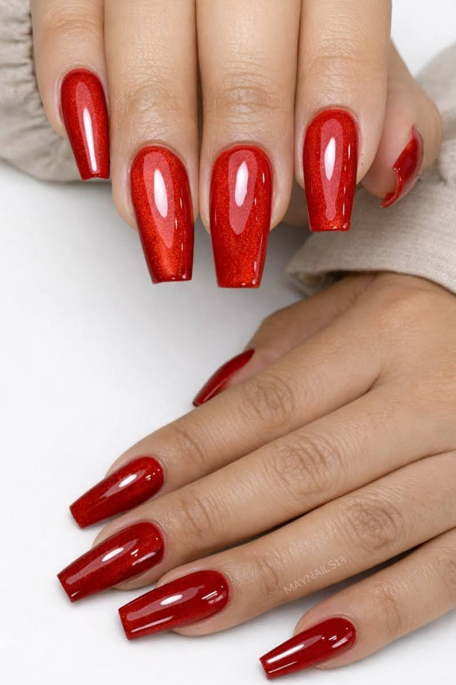
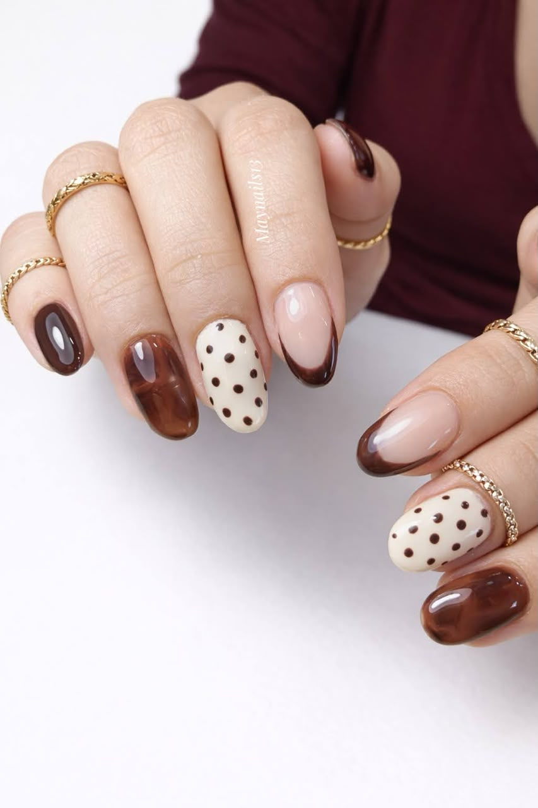
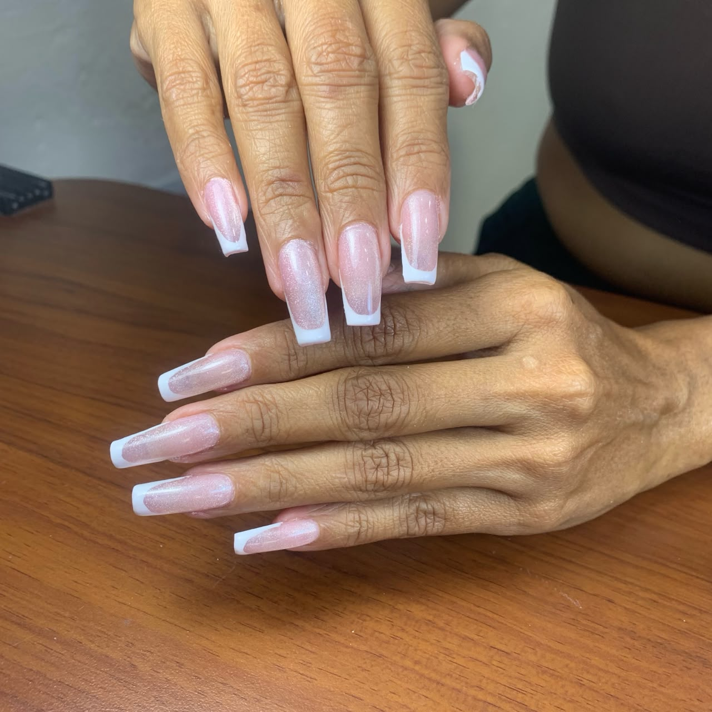
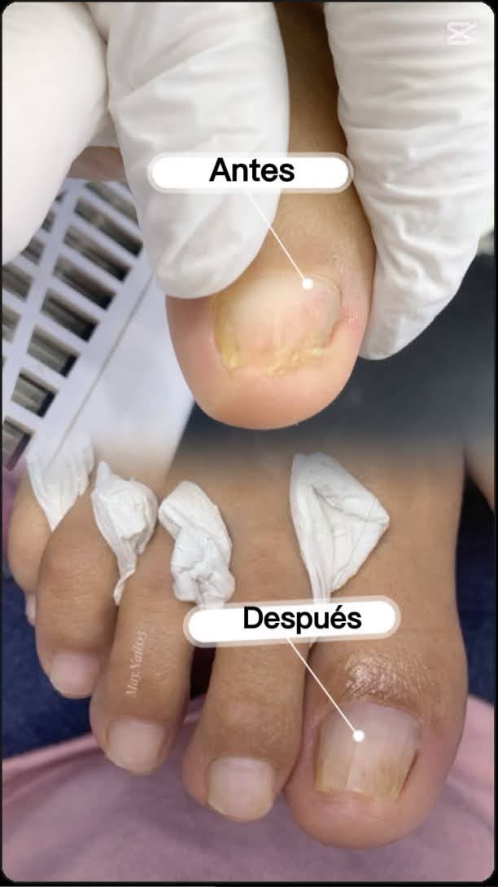

Manicure / Esmaltado en Gel
Desde $13Preparación profunda de la uña, limpieza de cutículas y aplicación de gel de alto brillo.
Beneficios
- Color duradero
- Secado inmediato en lámpara
- Acabado prolijo
Técnicas cuidadosas, acabados impecables y un momento para disfrutar.
Preparación profunda de la uña, limpieza de cutículas y aplicación de gel de alto brillo.

Base de alta densidad que rellena pequeñas irregularidades y crea una capa protectora robusta.

Extensiones 100% de gel flexible adheridas con base especial y curadas en lámpara.

Un acabado translúcido y luminoso que permite crear diseños con profundidad y efectos de color.

Técnica de extensión esculpida sin tips mediante molde dual para crear estructura y forma personalizada.

Esculpido estructural de máxima firmeza y durabilidad.

Limpieza, preparación de uñas, exfoliación, pulido de pies y esmaltado.

Atención especializada y estética para el cuidado integral del pie.
El valor final varía según la afección a tratar.
Agendar este servicioConoce cómo se realiza una sesión de láser y cómo actúa el tratamiento.
Agendar este servicioLos precios son referenciales y varían según el largo, diseño y material utilizado. En Quiropedia el precio varía según la afección a tratar.